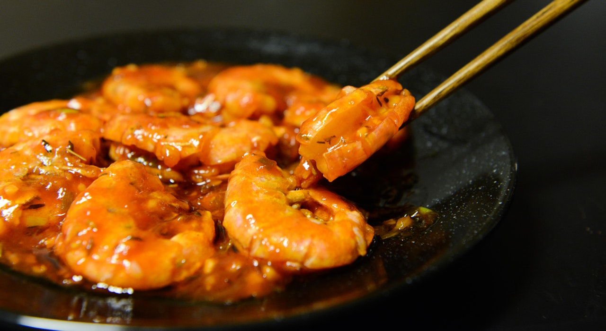

Copyright© 2020 , International Cuisine Blog
All Rights Reserved
Developded & Maintaied Arnav
A global cuisine is a cuisine that is practiced around the world. A cuisine is a characteristic style of cooking practices and traditions, often associated with a specific region, country or culture.

Bread is a staple food prepared from a dough of flour and water, usually by baking. Throughout recorded history it has been a prominent food in large parts of the world; it is one of the oldest man-made foods, having been of significant importance since the dawn of agriculture; and plays an essential role in religious rituals and secular culture.


| Bunger Buns | Toast | Tortilla |
|---|
Dessert is a course that concludes a meal. The course usually consists of sweet foods , such as confections, and possibly a beverage such as dessert wine or liqueur; however, in the United States it may include coffee, cheeses, nuts, or other savory items regarded as a separate course elsewhere. In some parts of the world, such as much of central and western Africa, and most parts of China, there is no tradition of a dessert course to conclude a meal.

A pancake (or hotcake, griddlecake, or flapjack, not to be confused with oat bar flapjacks) is a flat cake, often thin and round, prepared from a starch-based batter that may contain eggs, milk and butter and cooked on a hot s urface such as a griddle or frying pan, often frying with oil or butter. Archaeological evidence suggests that pancake s were probably the earliest and most widespread cereal food eaten in prehistoric societies.
The pancake's shape and structure varies worldwide. In England, pancakes are often unleavened and resemble a crêpe. In North America, a leavening agent is used (typically baking powder) creating a thick fluffy pancake. A crêpe is a thin Breton pancake of French origin cooked on one or both sides in a special pan or crepe maker to achieve a lacelike network of fine bubbles. A well-known variation originating from southeast Europe is a palačinke, a thin moist pancake fried on both sides and filled with jam, cheese cream, chocolate, or ground walnuts, but many other fillings—sweet or savoury—can also be used.
When potato is used as a major portion of the batter, the result is a potato pancake. Commercially prepared pancake mixes are available in some countries. When buttermilk is used in place of or in addition to milk, the pancake develops a tart flavor and becomes known as a buttermilk pancake, which is common in Scotland and the US. Buckwheat flour can be used in a pancake batter, making for a type of buckwheat pancake, a category that includes Blini, Kaletez, Ploye, and Memil-buchimgae.

Chocolate is a preparation of roasted and ground cacao seeds that is made in the form of a liquid, paste, or in a block, which may also be used as a flavoring ingredient in other foods. The earliest signs of use are associated with Olmec sites (within what would become Mexico’s post-colonial territory) suggesting consumption of chocolate beverages, dating from 19 centuries BCE.[1][2] The majority of Mesoamerican people made chocolate beverages, including the Maya and Aztecs.[3] The word chocolate is derived from the Spanish word chocolate, deriving in turn from the Classical Nahuatl word xocolātl.[4]
The seeds of the cacao tree have an intense bitter taste and must be fermented to develop the flavor. After fermentation, the beans are dried, cleaned, and roasted. The shell is removed to produce cacao nibs, which are then ground to cocoa mass, unadulterated chocolate in rough form. Once the cocoa mass is liquefied by heating, it is called chocolate liquor. The liquor may also be cooled and processed into its two components: cocoa solids and cocoa butter. Baking chocolate, also called bitter chocolate, contains cocoa solids and cocoa butter in varying proportions, without any added sugar. Powdered baking cocoa, which contains more fiber than cocoa butter, can be processed with alkali to produce dutch cocoa. Much of the chocolate consumed today is in the form of sweet chocolate, a combination of cocoa solids, cocoa butter or added vegetable oils, and sugar. Milk chocolate is sweet chocolate that additionally contains milk powder or condensed milk. White chocolate contains cocoa butter, sugar, and milk, but no cocoa solids.
Chocolate is one of the most popular food types and flavors in the world, and many foodstuffs involving chocolate exist, particularly desserts, including cakes, etc.
Frying is the cooking of food in oil or another fat. Similar to sautéing, pan-fried food s are generally turned over once or twice during cooking, using tongs or a spatula, while sautéed foods are cooked by "tossing in the pan". A large variety of foods may be fried.



| Pron Fry | Chicken Fry | French Fry | Fried Rice |
|---|
Vegetables are parts of plants that are consumed by humans or other animals as food. The original meaning is still commonly used and is applied to plants collectively to refer to all edible plant matter, including the flowers, fruits, stems, leaves, roots, and seeds. The alternate definition of the term is applied somewhat arbitrarily, often by culinary and cultural tradition.

The main course is the featured or primary dish in a meal consisting of several courses. It usually follows the entrée ("entry") course.